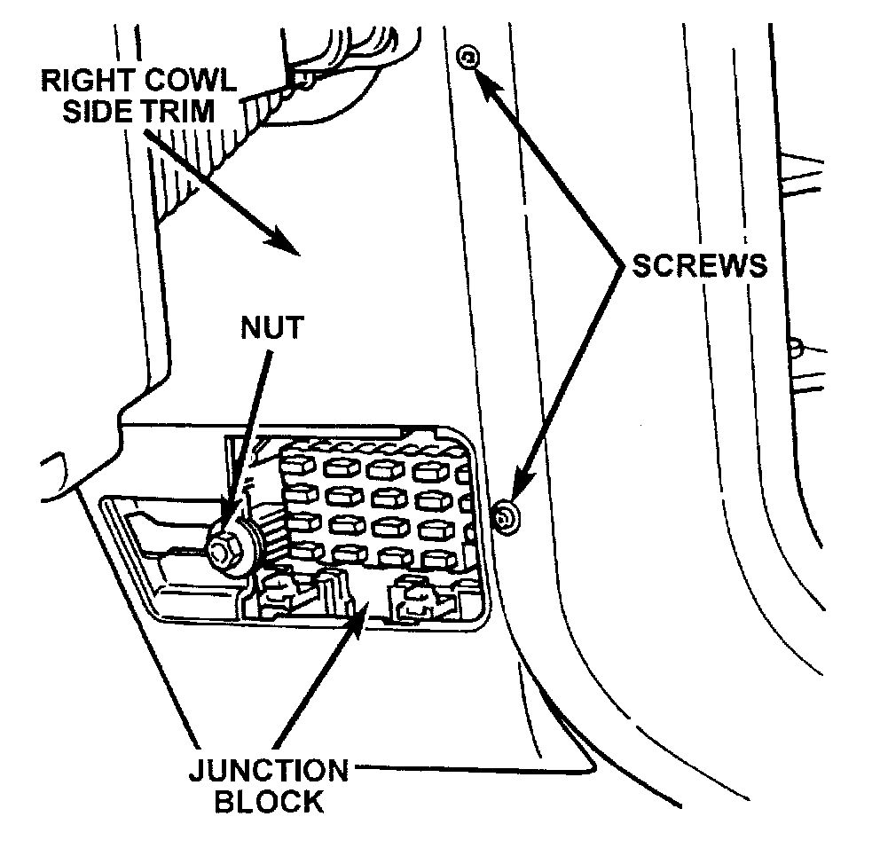
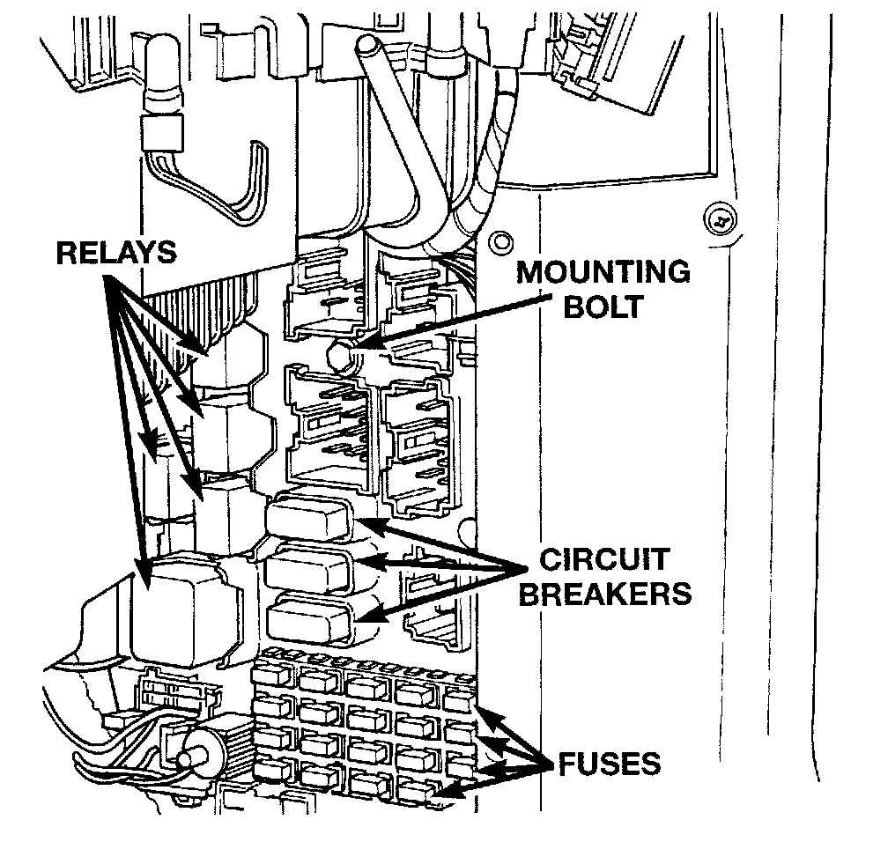

Junction Block
JUNCTION BLOCKWARNING: ON VEHICLES EQUIPPED WITH AIRBAGS, REFER TO PASSIVE RESTRAINT SYSTEMS BEFORE ATTEMPTING STEERING WHEEL, STEERING COLUMN, OR INSTRUMENT PANEL COMPONENT DIAGNOSIS OR SERVICE. FAILURE TO TAKE THE PROPER PRECAUTIONS COULD RESULT IN ACCIDENTAL AIRBAG DEPLOYMENT AND POSSIBLE PERSONAL INJURY.
(1) Disconnect and isolate the battery negative cable.
(2) Remove the fuse access panel by unsnapping it from the right cowl side trim panel.
Right Cowl Side Trim Remove/Install:

(3) Remove the nut securing the right cowl side trim to the junction block stud.
(4) Remove the two screws securing the right cowl side trim to the right front door opening trim.
(5) Remove the right cowl side trim panel.
(6) Unplug all of the wiring connectors from the junction block cavities.
Junction Block Remove/Install:

(7) Remove the junction block mounting bolt.
(8) Lift upwards on the junction block to remove its slide-tab mount off of the mounting bracket on the right cowl side panel.
(9) Remove the junction block from the vehicle.
(10) Reverse the removal procedures to install.